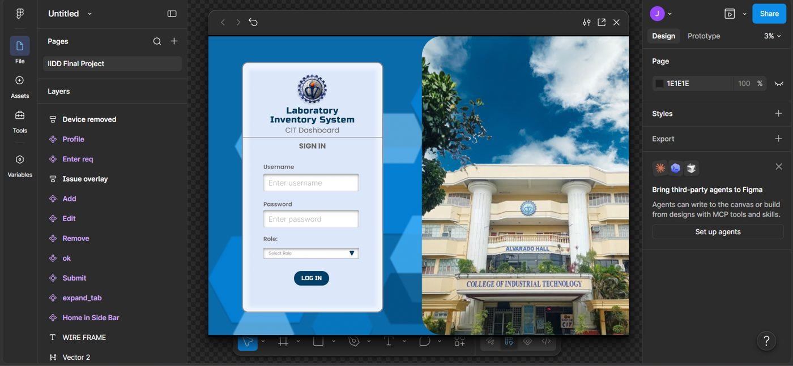

Smart Agriculture: Soil Analysis & Crop Recommendation
Role: UI/UX Designer & QA Tester
Agriculture students lacked a quick way to check soil without lab tests. The web app takes soil and weather readings and recommends crops with a K-Nearest Neighbors model. I designed the forms, dashboard and result screens, and tested login, analysis and admin functions.
Source CodeLive Demo

CIT Computer Laboratory Inventory System
Role: UI/UX Designer (Figma prototype)
Lab staff needed one place to track room status, device counts and maintenance requests. I designed a role-based admin dashboard for Student Assistant, Professor and Technician, with device status indicators and pages to add, edit and remove inventory.
Live Demo / Preview